Bayesian Estimation of the Additive Main Effects and Multiplicative Interaction Model
bayes_ammi.RdPerforms Bayesian Estimation of the Additive Main Effects and Multiplicative Interaction Model
bayes_ammi(.data, .y, .gen, .env, .rep, .nIter) # S3 method for default bayes_ammi(.data, .y, .gen, .env, .rep, .nIter)
Arguments
| .data | data.frame |
|---|---|
| .y | Response Variable |
| .gen | Genotypes Factor |
| .env | Environment Factor |
| .rep | Replication Factor |
| .nIter | Number of Iterations |
Value
Genotype by Environment Interaction Model
References
Crossa, J., Perez-Elizalde, S., Jarquin, D., Cotes, J.M., Viele, K., Liu, G., and Cornelius, P.L. (2011) Bayesian Estimation of the Additive Main Effects and Multiplicative Interaction Model Crop Science, 51, 1458–1469. (doi: 10.2135/cropsci2010.06.0343)
Examples
data(Maiz) fm1 <- bayes_ammi( .data = Maiz , .y = y , .gen = entry , .env = site , .rep = rep , .nIter = 20 ) names(fm1)#> [1] "mu1" "tau1" "tao1" "delta1" "lambdas1" "alphas1" "gammas1" #> [8] "alphas0" "gammas0"fm1$mu1#> # A tibble: 20 x 1 #> mu #> <dbl> #> 1 4855. #> 2 5269. #> 3 4597. #> 4 4701. #> 5 4942. #> 6 4727. #> 7 4843. #> 8 4799. #> 9 4965. #> 10 4922. #> 11 5198. #> 12 4723. #> 13 4833. #> 14 4766. #> 15 4489. #> 16 4827. #> 17 4495. #> 18 4990. #> 19 4705. #> 20 4987.fm1$tau1#> # A tibble: 20 x 1 #> tau #> <dbl> #> 1 0.00000166 #> 2 0.00000166 #> 3 0.00000166 #> 4 0.00000166 #> 5 0.00000166 #> 6 0.00000166 #> 7 0.00000166 #> 8 0.00000166 #> 9 0.00000166 #> 10 0.00000166 #> 11 0.00000166 #> 12 0.00000166 #> 13 0.00000166 #> 14 0.00000166 #> 15 0.00000166 #> 16 0.00000166 #> 17 0.00000166 #> 18 0.00000166 #> 19 0.00000166 #> 20 0.00000166fm1$tao1#> # A tibble: 20 x 9 #> tao1 tao2 tao3 tao4 tao5 tao6 tao7 tao8 tao9 #> <dbl> <dbl> <dbl> <dbl> <dbl> <dbl> <dbl> <dbl> <dbl> #> 1 -263. -252. -31.5 360. 396. 470. -170. -580. 70.0 #> 2 -213. -258. -24.1 356. 361. 458. -191. -552. 63.7 #> 3 -295. -244. -2.61 358. 398. 487. -184. -592. 74.0 #> 4 -256. -245. -39.5 321. 381. 490. -133. -598. 79.2 #> 5 -244. -275. -8.04 368. 387. 459. -186. -572. 70.6 #> 6 -228. -256. -37.1 335. 397. 492. -232. -587. 116. #> 7 -190. -253. 2.21 392. 402. 459. -230. -632. 49.9 #> 8 -263. -270. -12.2 336. 401. 489. -157. -602. 78.5 #> 9 -261. -222. -56.3 358. 370. 447. -201. -527. 92.5 #> 10 -230. -241. -32.7 388. 390. 431. -172. -605. 73.4 #> 11 -236. -245. -62.5 364. 394. 457. -162. -545. 34.7 #> 12 -240. -242. -39.0 357. 437. 466. -218. -607. 85.9 #> 13 -198. -248. -43.4 373. 401. 426. -178. -610. 75.2 #> 14 -211. -278. -45.6 387. 361. 504. -212. -551. 44.8 #> 15 -248. -216. -46.1 376. 385. 480. -170. -594. 31.9 #> 16 -251. -267. -7.88 316. 385. 463. -144. -578. 81.8 #> 17 -252. -220. -29.4 339. 405. 432. -194. -581. 100. #> 18 -202. -260. -0.128 334. 382. 461. -186. -596. 66.8 #> 19 -251. -231. -32.3 370. 357. 454. -169. -595. 98.3 #> 20 -222. -243. -40.2 380. 359. 452. -170. -594. 76.6fm1$delta1#> # A tibble: 20 x 20 #> delta1 delta2 delta3 delta4 delta5 delta6 delta7 delta8 delta9 delta10 #> <dbl> <dbl> <dbl> <dbl> <dbl> <dbl> <dbl> <dbl> <dbl> <dbl> #> 1 -1231. -659. 240. 378. 91.0 1441. -1641. -829. 107. -1911. #> 2 -1217. -596. 294. 334. 32.9 1432. -1627. -821. 99.9 -1953. #> 3 -1272. -659. 219. 373. 88.5 1459. -1659. -851. 81.2 -1901. #> 4 -1269. -610. 214. 385. 81.8 1452. -1649. -854. 116. -1913. #> 5 -1233. -618. 235. 385. 107. 1422. -1648. -829. 98.4 -1904. #> 6 -1232. -688. 261. 374. 114. 1465. -1613. -828. 77.6 -1938. #> 7 -1235. -668. 264. 363. 81.3 1464. -1630. -833. 84.5 -1936. #> 8 -1272. -656. 261. 378. 66.7 1412. -1654. -801. 101. -1893. #> 9 -1235. -638. 255. 327. 94.0 1413. -1648. -844. 128. -1914. #> 10 -1220. -688. 232. 363. 103. 1457. -1628. -812. 117. -1901. #> 11 -1258. -640. 265. 376. 68.0 1470. -1644. -822. 100. -1943. #> 12 -1248. -691. 255. 348. 79.1 1452. -1594. -852. 125. -1952. #> 13 -1222. -645. 249. 318. 97.3 1481. -1622. -811. 127. -1923. #> 14 -1202. -670. 195. 331. 102. 1458. -1619. -817. 98.4 -1923. #> 15 -1276. -666. 265. 382. 60.0 1467. -1644. -816. 113. -1908. #> 16 -1223. -672. 236. 387. 90.4 1453. -1618. -861. 110. -1906. #> 17 -1265. -647. 214. 367. 93.6 1508. -1586. -857. 134. -1875. #> 18 -1228. -640. 231. 369. 111. 1483. -1642. -855. 99.4 -1946. #> 19 -1248. -635. 241. 389. 149. 1408. -1637. -802. 125. -1921. #> 20 -1251. -635. 246. 363. 91.5 1464. -1634. -828. 109. -1962. #> # ... with 10 more variables: delta11 <dbl>, delta12 <dbl>, delta13 <dbl>, #> # delta14 <dbl>, delta15 <dbl>, delta16 <dbl>, delta17 <dbl>, delta18 <dbl>, #> # delta19 <dbl>, delta20 <dbl>fm1$lambdas1#> # A tibble: 20 x 8 #> lambdas1 lambdas2 lambdas3 lambdas4 lambdas5 lambdas6 lambdas7 lambdas8 #> <dbl> <dbl> <dbl> <dbl> <dbl> <dbl> <dbl> <dbl> #> 1 5298. 6441. 8720. 194. 4741. 243. 63434. 12137. #> 2 5298. 6441. 8720. 194. 4741. 243. 63434. 12137. #> 3 5298. 6441. 8720. 194. 4741. 243. 63434. 12137. #> 4 5298. 6441. 8720. 194. 4741. 243. 63434. 12137. #> 5 5298. 6441. 8720. 194. 4741. 243. 63434. 12137. #> 6 5298. 6441. 8720. 194. 4741. 243. 63434. 12137. #> 7 5298. 6441. 8720. 194. 4741. 243. 63434. 12137. #> 8 5298. 6441. 8720. 194. 4741. 243. 63434. 12137. #> 9 5298. 6441. 8720. 194. 4741. 243. 63434. 12137. #> 10 5298. 6441. 8720. 194. 4741. 243. 63434. 12137. #> 11 5298. 6441. 8720. 194. 4741. 243. 63434. 12137. #> 12 5298. 6441. 8720. 194. 4741. 243. 63434. 12137. #> 13 5298. 6441. 8720. 194. 4741. 243. 63434. 12137. #> 14 5298. 6441. 8720. 194. 4741. 243. 63434. 12137. #> 15 5298. 6441. 8720. 194. 4741. 243. 63434. 12137. #> 16 5298. 6441. 8720. 194. 4741. 243. 63434. 12137. #> 17 5298. 6441. 8720. 194. 4741. 243. 63434. 12137. #> 18 5298. 6441. 8720. 194. 4741. 243. 63434. 12137. #> 19 5298. 6441. 8720. 194. 4741. 243. 63434. 12137. #> 20 5298. 6441. 8720. 194. 4741. 243. 63434. 12137.fm1$alphas1#> # A tibble: 9 x 8 #> alphas1 alphas2 alphas3 alphas4 alphas5 alphas6 alphas7 alphas8 #> <dbl> <dbl> <dbl> <dbl> <dbl> <dbl> <dbl> <dbl> #> 1 0.212 -0.110 0.0506 0.476 -0.480 -0.528 -0.173 0.382 #> 2 0.171 0.214 -0.385 0.397 -0.227 0.417 -0.129 -0.280 #> 3 0.401 -0.408 -0.343 0.248 -0.259 -0.234 0.338 -0.178 #> 4 -0.423 0.350 0.501 0.222 -0.566 -0.385 -0.280 -0.186 #> 5 0.352 0.211 0.326 0.306 0.767 0.152 -0.187 -0.143 #> 6 0.0867 -0.0515 -0.389 -0.385 0.150 0.0826 -0.112 0.0197 #> 7 -0.246 0.267 -0.651 0.593 -0.167 0.213 -0.149 -0.531 #> 8 -0.0755 0.564 0.421 0.0466 -0.158 -0.343 0.224 0.116 #> 9 0.169 -0.687 0.280 0.282 -0.0921 0.168 0.245 -0.481fm1$gammas1#> # A tibble: 20 x 8 #> gammas1 gammas2 gammas3 gammas4 gammas5 gammas6 gammas7 gammas8 #> <dbl> <dbl> <dbl> <dbl> <dbl> <dbl> <dbl> <dbl> #> 1 0.0690 -0.0134 -0.359 -0.231 -0.0346 -0.0903 0.358 0.285 #> 2 -0.137 0.281 -0.0637 0.250 -0.0409 -0.460 -0.0297 0.195 #> 3 0.313 -0.146 0.0811 -0.227 0.298 0.181 -0.334 0.0755 #> 4 0.290 0.441 -0.105 -0.108 -0.0380 0.146 -0.0111 -0.197 #> 5 0.0305 0.0756 -0.199 0.0180 0.0360 -0.506 -0.258 0.165 #> 6 0.0196 0.354 0.0298 -0.0810 -0.0714 -0.400 0.0263 -0.260 #> 7 -0.165 0.253 0.0420 -0.343 -0.225 -0.0480 0.330 -0.130 #> 8 0.322 -0.0272 0.00195 0.373 0.651 -0.149 0.161 0.215 #> 9 -0.00637 -0.155 -0.244 -0.0651 0.0815 0.196 -0.0798 -0.00344 #> 10 0.136 -0.335 -0.0184 -0.255 0.0425 0.242 -0.218 -0.196 #> 11 -0.110 -0.0745 -0.0372 0.122 0.0109 -0.248 -0.468 -0.0371 #> 12 0.123 0.349 0.180 -0.101 -0.0824 0.295 -0.0901 0.389 #> 13 0.194 -0.133 0.139 -0.420 0.111 -0.226 0.242 -0.235 #> 14 -0.199 0.106 -0.0876 -0.0462 0.129 0.0569 0.523 -0.119 #> 15 -0.0144 -0.395 0.0887 0.268 -0.296 -0.253 0.117 0.230 #> 16 -0.262 -0.295 -0.254 0.105 0.0987 0.0703 0.0232 -0.584 #> 17 -0.00703 0.100 0.336 0.377 0.137 -0.0738 0.0126 -0.111 #> 18 0.218 0.159 -0.161 0.109 0.211 -0.302 -0.0644 0.0729 #> 19 0.273 0.222 0.102 -0.130 -0.186 -0.0238 -0.0547 -0.102 #> 20 -0.699 0.0276 0.104 0.170 -0.0663 0.284 0.199 -0.0373library(ggplot2) Plot1Mu <- ggplot(data = fm1$mu1, mapping = aes(x = 1:nrow(fm1$mu1), y = mu)) + geom_line(color = "blue") + scale_x_continuous(labels = scales::comma) + scale_y_continuous(labels = scales::comma) + labs(y = expression(mu), x = "Iterations") + theme_bw() print(Plot1Mu)Plot2Mu <- ggplot(data = fm1$mu1, mapping = aes(mu)) + geom_histogram() + scale_x_continuous(labels = scales::comma) + scale_y_continuous(labels = scales::comma) + labs(y = "Frequency", x = expression(mu)) + theme_bw() print(Plot2Mu)#>Plot1Sigma2 <- ggplot(data = fm1$tau1, mapping = aes(x = 1:nrow(fm1$tau1), y = tau)) + geom_line(color = "blue") + scale_x_continuous(labels = scales::comma) + scale_y_continuous(labels = scales::comma) + labs(y = expression(sigma^2), x = "Iterations") + theme_bw() print(Plot1Sigma2)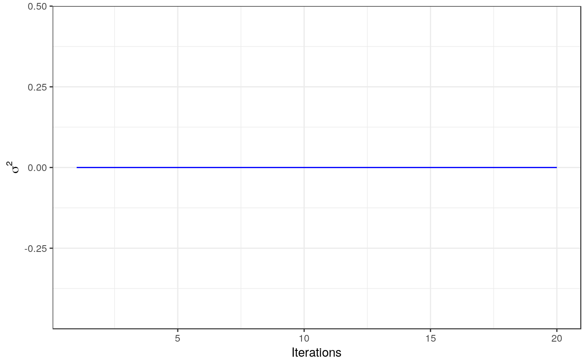Plot2Sigma2 <- ggplot(data = fm1$tau1, mapping = aes(tau)) + geom_histogram() + scale_x_continuous(labels = scales::comma) + scale_y_continuous(labels = scales::comma) + labs(y = "Frequency", x = expression(sigma^2)) + theme_bw() print(Plot2Sigma2)#>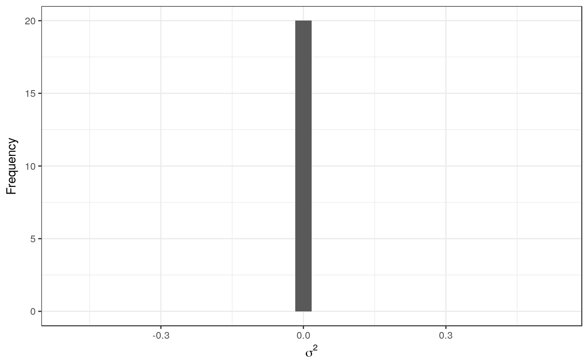# Plot of Alphas Plot1Alpha1 <- ggplot(data = fm1$tao1, mapping = aes(x = 1:nrow(fm1$tao1), y = tao1)) + geom_line(color = "blue") + scale_x_continuous(labels = scales::comma) + scale_y_continuous(labels = scales::comma) + labs(y = expression(alpha[1]), x = "Iterations") + theme_bw() print(Plot1Alpha1)Plot2Alpha1 <- ggplot(data = fm1$tao1, mapping = aes(tao1)) + geom_histogram() + scale_x_continuous(labels = scales::comma) + scale_y_continuous(labels = scales::comma) + labs(y = "Frequency", x = expression(alpha[1])) + theme_bw() print(Plot2Alpha1)#>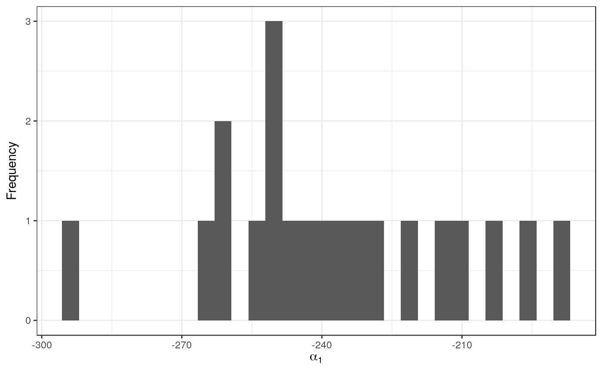Plot1Alpha2 <- ggplot(data = fm1$tao1, mapping = aes(x = 1:nrow(fm1$tao1), y = tao2)) + geom_line(color = "blue") + scale_x_continuous(labels = scales::comma) + scale_y_continuous(labels = scales::comma) + labs(y = expression(alpha[2]), x = "Iterations") + theme_bw() print(Plot1Alpha2)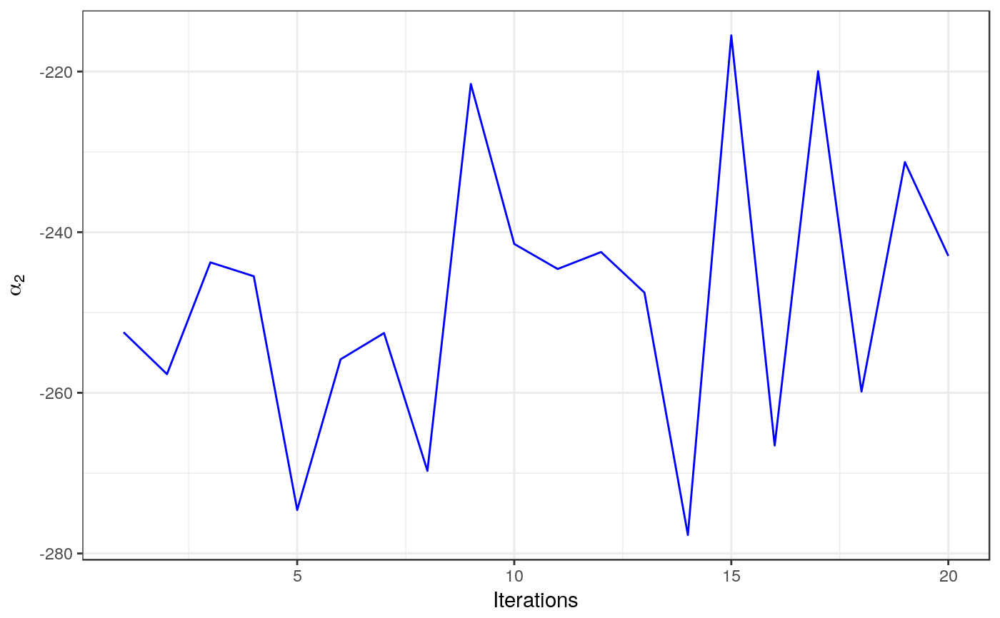Plot2Alpha2 <- ggplot(data = fm1$tao1, mapping = aes(tao2)) + geom_histogram() + scale_x_continuous(labels = scales::comma) + scale_y_continuous(labels = scales::comma) + labs(y = "Frequency", x = expression(alpha[2])) + theme_bw() print(Plot2Alpha2)#>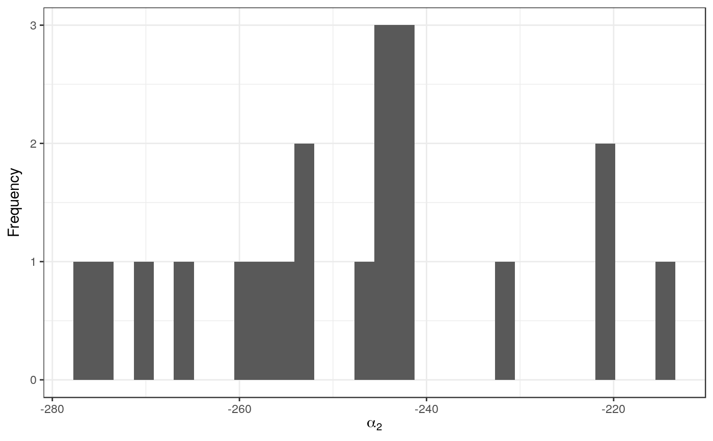# Plot of Betas Plot1Beta1 <- ggplot(data = fm1$delta1, mapping = aes(x = 1:nrow(fm1$delta1), y = delta1)) + geom_line(color = "blue") + scale_x_continuous(labels = scales::comma) + scale_y_continuous(labels = scales::comma) + labs(y = expression(beta[1]), x = "Iterations") + theme_bw() print(Plot1Beta1)Plot2Beta1 <- ggplot(data = fm1$delta1, mapping = aes(delta1)) + geom_histogram() + scale_x_continuous(labels = scales::comma) + scale_y_continuous(labels = scales::comma) + labs(y = "Frequency", x = expression(beta[1])) + theme_bw() print(Plot2Beta1)#>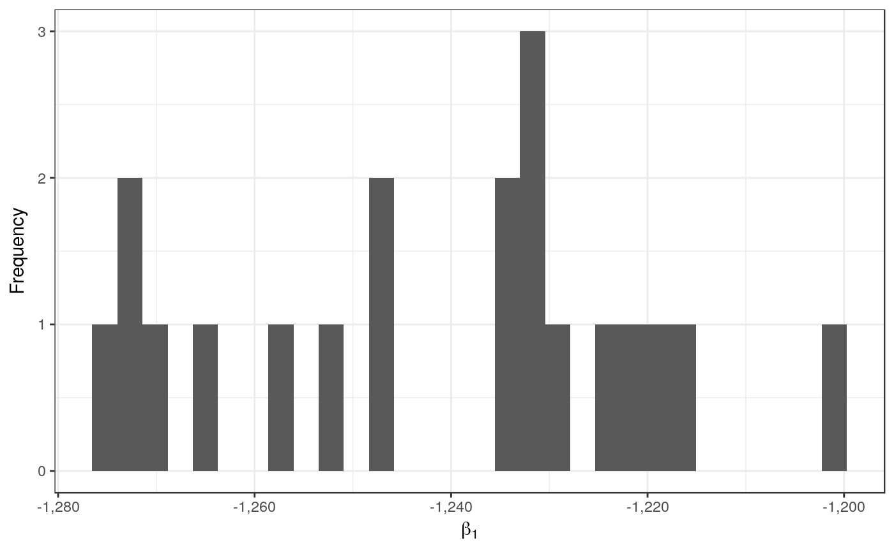Plot1Beta2 <- ggplot(data = fm1$delta1, mapping = aes(x = 1:nrow(fm1$delta1), y = delta2)) + geom_line(color = "blue") + scale_x_continuous(labels = scales::comma) + scale_y_continuous(labels = scales::comma) + labs(y = expression(beta[2]), x = "Iterations") + theme_bw() print(Plot1Beta2)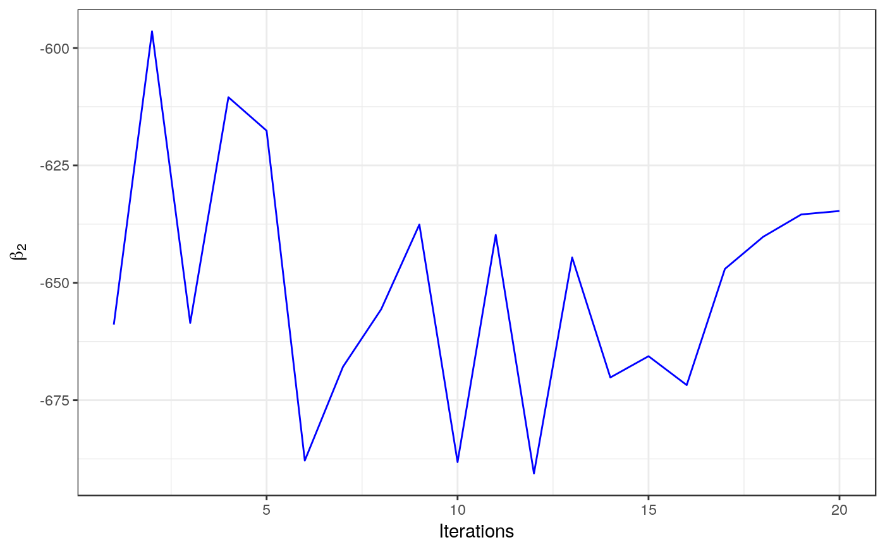Plot2Beta2 <- ggplot(data = fm1$delta1, mapping = aes(delta2)) + geom_histogram() + scale_x_continuous(labels = scales::comma) + scale_y_continuous(labels = scales::comma) + labs(y = "Frequency", x = expression(beta[2])) + theme_bw() print(Plot2Beta2)#>Plot1Beta3 <- ggplot(data = fm1$delta1, mapping = aes(x = 1:nrow(fm1$delta1), y = delta3)) + geom_line(color = "blue") + scale_x_continuous(labels = scales::comma) + scale_y_continuous(labels = scales::comma) + labs(y = expression(beta[3]), x = "Iterations") + theme_bw() print(Plot1Beta3)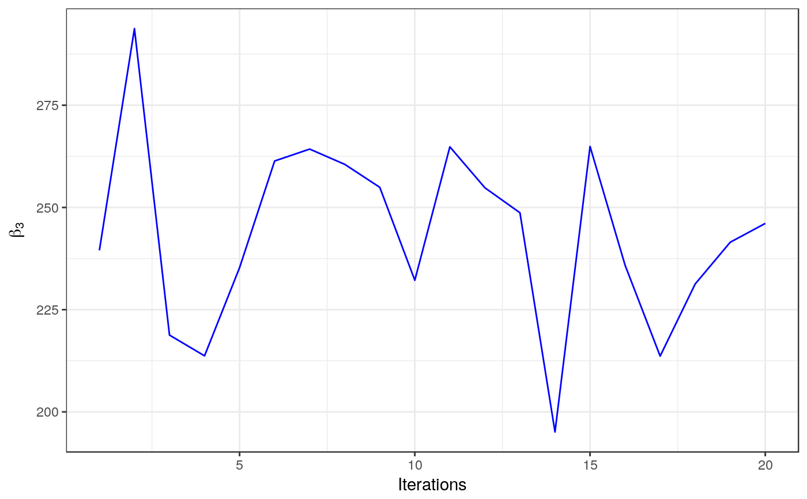Plot2Beta3 <- ggplot(data = fm1$delta1, mapping = aes(delta3)) + geom_histogram() + scale_x_continuous(labels = scales::comma) + scale_y_continuous(labels = scales::comma) + labs(y = "Frequency", x = expression(beta[3])) + theme_bw() print(Plot2Beta3)#>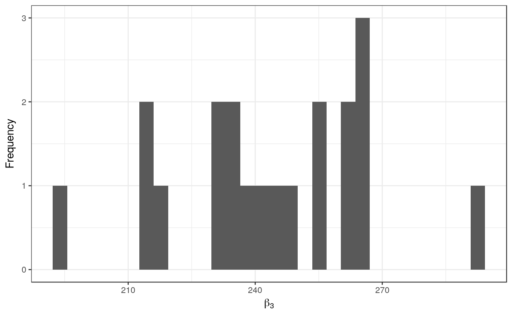BiplotAMMI <- ggplot(data = fm1$alphas0, mapping = aes(x = alphas1, y = alphas2)) + geom_point() + geom_hline(yintercept = 0) + geom_vline(xintercept = 0) + geom_text(aes(label = 1:nrow(fm1$alphas0)), vjust = "inward", hjust = "inward") + geom_point(data = fm1$gammas0, mapping = aes(x = gammas1, y = gammas2)) + geom_segment(data = fm1$gammas0, aes(x = 0, y = 0, xend = gammas1, yend = gammas2), arrow = arrow(length = unit(0.2, "cm")) , alpha = 0.75, color = "red") + geom_text(data = fm1$gammas0, aes(x = gammas1, y = gammas2, label = paste0("E", 1:nrow(fm1$gammas0))), vjust = "inward", hjust = "inward") + scale_x_continuous( limits = c(-max(abs(c(range(fm1$alphas0[, 1:2], fm1$gammas0[, 1:2])))) , max(abs(c(range(fm1$alphas0[, 1:2], fm1$gammas0[, 1:2])))))) + scale_y_continuous( limits = c(-max(abs(c(range(fm1$alphas0[, 1:2], fm1$gammas0[, 1:2])))) , max(abs(c(range(fm1$alphas0[, 1:2], fm1$gammas0[, 1:2])))))) + labs(title = "MCO Method", x = expression(PC[1]), y = expression(PC[2])) + theme_bw() + theme(plot.title = element_text(hjust = 0.5)) print(BiplotAMMI)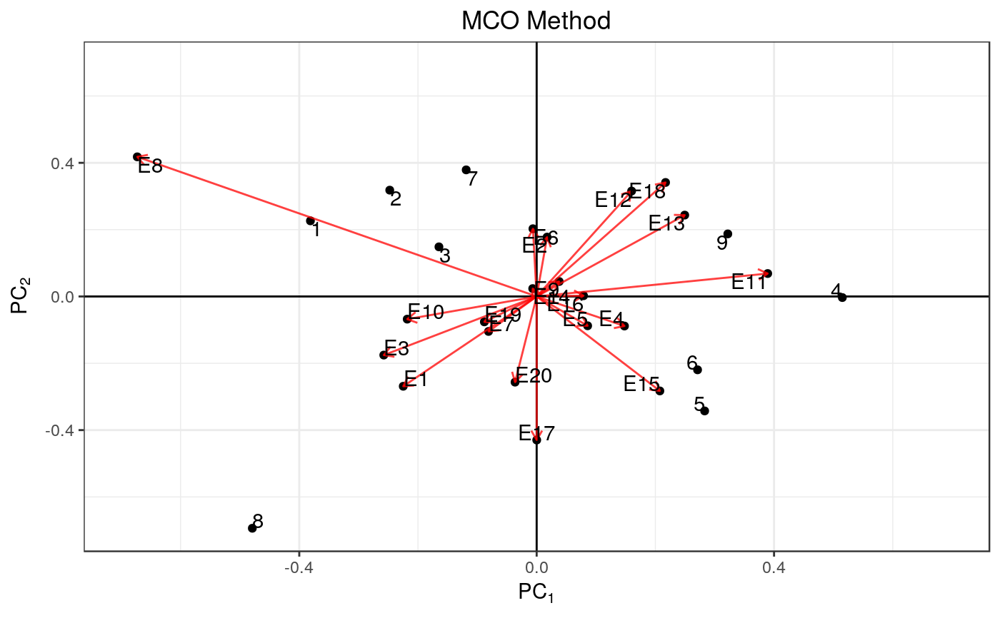BiplotBayesAMMI <- ggplot(data = fm1$alphas1, mapping = aes(x = alphas1, y = alphas2)) + geom_point() + geom_hline(yintercept = 0) + geom_vline(xintercept = 0) + geom_text(aes(label = 1:nrow(fm1$alphas1)), vjust = "inward", hjust = "inward") + geom_point(data = fm1$gammas1, mapping = aes(x = gammas1, y = gammas2)) + geom_segment(data = fm1$gammas1, aes(x = 0, y = 0, xend = gammas1, yend = gammas2), arrow = arrow(length = unit(0.2, "cm")) , alpha = 0.75, color = "red") + geom_text(data = fm1$gammas1, aes(x = gammas1, y = gammas2, label = paste0("E", 1:nrow(fm1$gammas1))), vjust = "inward", hjust = "inward") + scale_x_continuous( limits = c(-max(abs(c(range(fm1$alphas1[, 1:2], fm1$gammas1[, 1:2])))) , max(abs(c(range(fm1$alphas1[, 1:2], fm1$gammas1[, 1:2])))))) + scale_y_continuous( limits = c(-max(abs(c(range(fm1$alphas1[, 1:2], fm1$gammas1[, 1:2])))) , max(abs(c(range(fm1$alphas1[, 1:2], fm1$gammas1[, 1:2])))))) + labs(title = "Bayesian Method", x = expression(PC[1]), y = expression(PC[2])) + theme_bw() + theme(plot.title = element_text(hjust = 0.5)) print(BiplotBayesAMMI)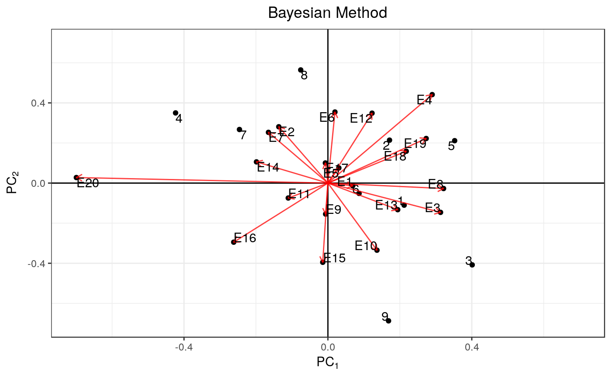